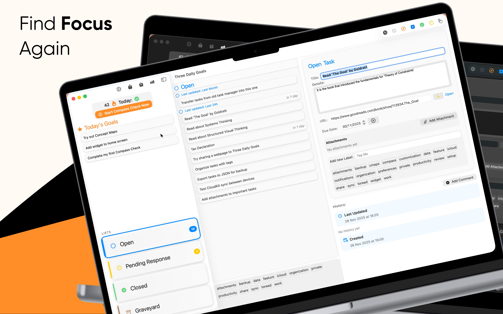
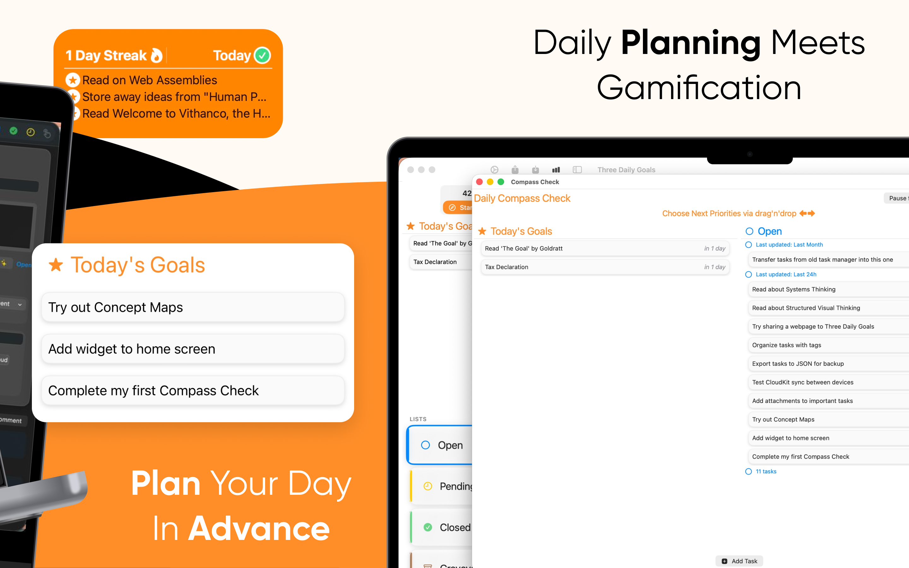
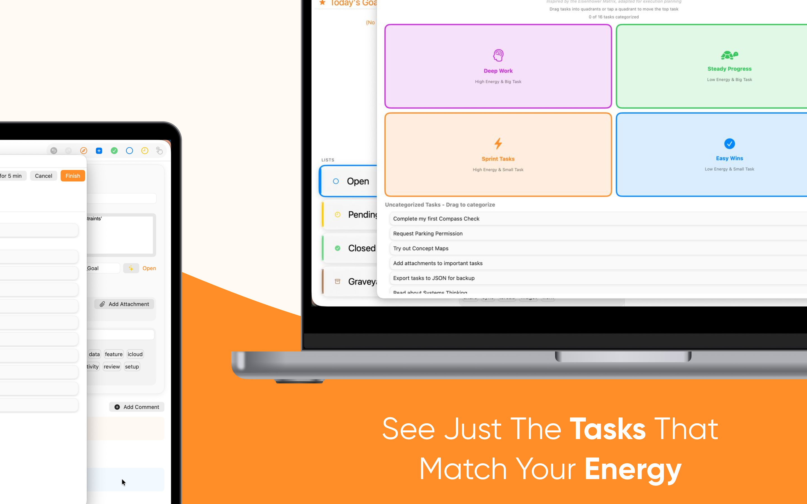
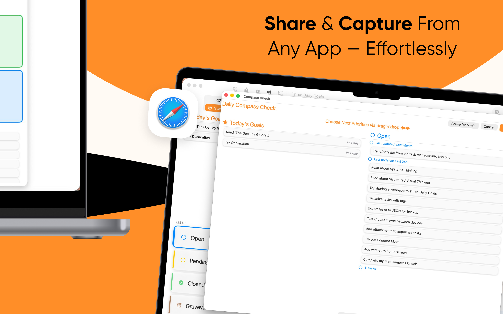
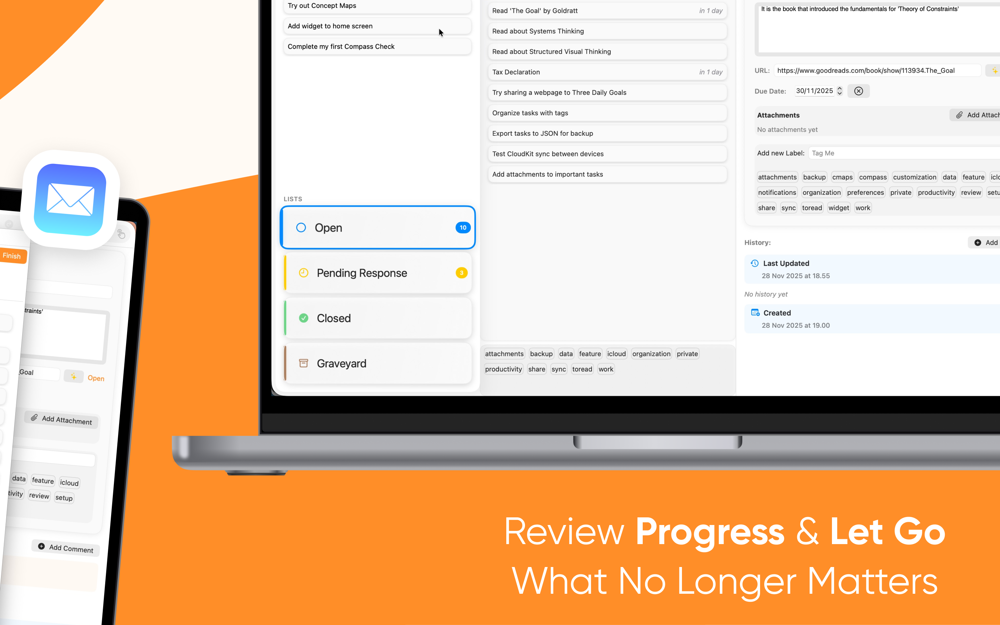

Find Focus Again
Main 3-column view: streak + Today's Goals (left), Open list (centre), task detail (right)

Daily Planning Meets Gamification
Compass Check window: Choose Next Priorities drag-and-drop (Priority + Open side-by-side)

See Just The Tasks That Match Your Energy
Compass Check: Energy-Effort Matrix step (4-quadrant card picker)

Share & Capture From Any App — Effortlessly
Compass Check open + Safari share extension icon floating

Full macOS layout
3-column view: Today's Goals (left), Open task list with section headers (centre), task detail (right)
All platforms supported
iPhone (front) + iPad + Mac (back) — CloudKit sync across all three devices
App Store marketing screenshots. Same brand story as iOS but wider device frames (MacBook). Warm cream (#FFF9F1) + brand orange (#EA580C) + black geometric backgrounds. Headlines use mixed weight: regular + bold on the key word.